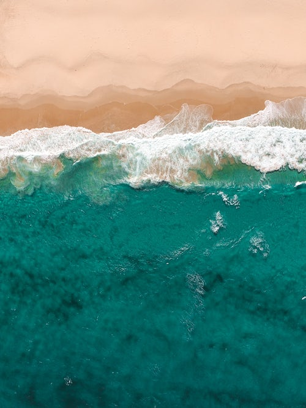
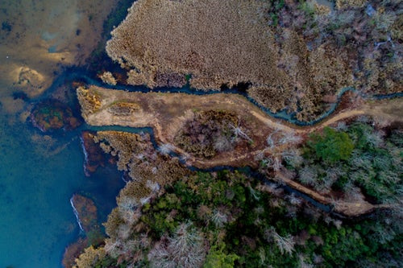

Coastal Habitats
Coastal habitats comprise of those around the shoreline. Coastal habitats are usually distinguished as reaching as far as the coastal shelf. Marine animals found in these kinds of habitats are diverse, from birds such as puffins and penguins, to sea snails and barnacles.
Mammals found along coastal areas include dolphins.
Coastal regions also host reptiles such as sea turtles.
Open Ocean

The open ocean is also known as the pelagic zone. Most marine creatures thrive in shallower depths where light is more abundant.
Where sea creatures are found in the ocean also depends on the temperature of the water. Creatures found in temperate waters include lobsters, swordfish and sea urchins. Creatures that thrive in tropical waters include seahorses, octopi, clownfish, sharks and stingrays. Polar creatures include killer whales, cod and beluga whales.
The Deep

The Deep is home to
Estuaries
Estuaries are also a marine habitat, which are classified by theirn saltwater percentage.